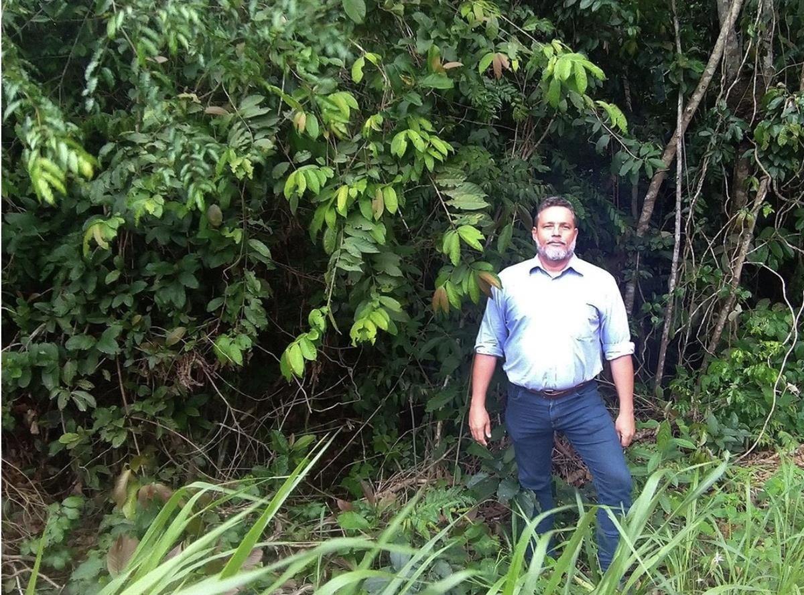
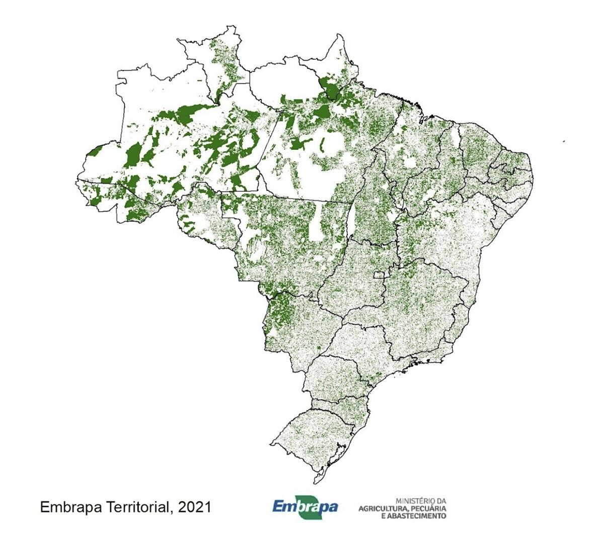

Preserving Amazon rainforest turns into thriving business in Brazil – a success story
By Edgar Maciel 05 October 2022
Share
Ricardo Stoppe conserves half a million hectares of forest and earns US$12 million a year. Selling carbon is more profitable than raising cattle.
It is in the south of the state of Amazonas, the cradle of the Amazon Rainforest, that one of the largest single sellers of carbon credits in the world lives. Ricardo Stoppe is an example of how it is possible to make money by keeping the forest standing and how the preservation of natural resources can be a stimulant for Brazil’s economy.
Having graduated in medicine, Ricardo’s dream was to be a farmer. In the late 1990s, he bought some land in the state of Mato Grosso but the lack of adequate roads to transport cattle thwarted his plans.
Sometime later, he found a good opportunity in the Ituxi region in Amazonas State and invested US$60,000 to buy 150,000 hectares of land – part of which had already been deforested.
The return on this investment would have been easily made had Stoppe chosen to use the area for soy planting and cattle grazing but he decided to go in the opposite direction which left neighboring farmers thinking Ricardo had gone “crazy” – earning money from polluting industries willing to offset the carbon emitted into the atmosphere.
“People called me crazy, joking that I believed in Santa Claus. They told me to cut down the trees and plant soybeans and breed cattle that would make money easily. And they were right really. But I kept the area untouched for years, preserving it for carbon credits,” reveals Stoppe.
The dream of being a farmer gave way to a passion for the Amazon and for the preservation of the forest.

Ricardo Stoppe/Photo Credit: Ricardo Stoppe“We should be doing all kinds of research here. It is not possible to give up such wealth. The Amazon is a treasure,” he says.
The carbon that the thousands of trees suck from the air is the food that guarantees the growth of their roots and also of Ricardo’s business. To earn money through his newfound passion, Stoppe had to chase certification to prove that the noise of a chainsaw does not echo around there.
The transaction was made through Moss, the first Brazilian carbon exchange. Through it, investors can acquire “tokens” linked to carbon credits in the same way that they acquire virtual currencies that use blockchain such as bitcoin.
See also: Brazilian companies sell NFTs to help preserve Amazon rainforest
To sell the carbon credits, the farmer invested around 1 million reais (US$200,000) in certification. The most difficult job in conserving the land is to avoid intruders who try to illegally extract logs to sell to unlawful loggers.
“The problem is mainly at the edges of the property. If I spend a week without looking, I’ll find everything knocked down”, he says. “In Brazil, people don’t understand that it is a preserved area and not an empty area. People can invade it, cut trees down, and sell wood. The security cost of all this is very high,” he added.
After growing year after year, Stoppe now has revenues of over US$12 million a year from the sale of carbon credits.
“The forest today has much more wealth standing than lying down. Today, for me, there is nothing that compares to the standing forest. Neither soy, nor corn, nor cattle”, he says.
And the neighbors, who used to call him “crazy” now want to know how to get into the business.
“It took a long time for Brazil to wake up. Until today you go to talk to the bank and they say it’s not a proper business. How could it not be, if I have lived on this for 10 years?”.
Stoppe’s next steps will be to scale up the carbon operation and he is convincing his neighbors to join in. In addition, the farmer has acquired more land and altogether, he is now responsible for conserving almost half a million hectares of forest with a plan to reach 3 million hectares of preserved area, almost the size of all of Belgium.
“I want this business to grow, so that more people can join and protect the Amazon. It is wonderful. We don’t have that anywhere else in the world,” says Ricardo.
Brazil: Carbon’s Saudi Arabia
Market projections show that Brazil has the potential to reach US$45 billion a year from sales in the voluntary carbon market. Today, the country certifies around 5 million tons a year but could reach 1.5 billion tons.
“Brazil is the Saudi Arabia of carbon. We have 40% of the world’s tropical forests and therefore, 50% of the estimated potential for generating carbon credits in the world,” explains Luis Felipe Adaime, CEO of Moss.
Considering the current price practiced in ETS, the European regulated market – the highest in the world – of US$30 per ton, the figure could reach US$45 billion.

Source: Agricultura e Preservação
The map above shows that Brazil has more than five million rural properties spread throughout its territory. There are more than 218 million hectares of native and preserved forest. Land that, together is worth more than 2 trillion reais (US$400 billion).
A territory that keeps its trees standing can be exploited by the carbon market, but barriers still need to be broken down to convince new rural producers to market their credits.
“Market values are still below the existing potential, what the rural producer gives up for him to carry out these activities. There is still a disparity between what he would earn producing in this area and what he is receiving to preserve the environment,” explains Gustavo Spadorini, director of Embrapa Territorial.
The major problem is the cost of certification which is still very expensive and prevents the vast majority of producers from making their land profitable by selling carbon. Each certification costs, on average, US$1 million.
Companies like Moss have been relying on partnerships to bear the costs by becoming partners with the owners.
“We approach the owner and make a proposal for a partnership. He comes with the forest standing and we come with the project and then we share the carbon credits,” explains Felipe.
There is still a long way to go before more producers like Ricardo start earning more from the green economy in South America.
“We certify between 1% and 2% of what we can certify. Our country’s potential is to multiply 60, 70 times what we currently certify, up to 100,” says Adaime. “No country in the world has this potential.”
SOURCE: DEVELOPMENT AID